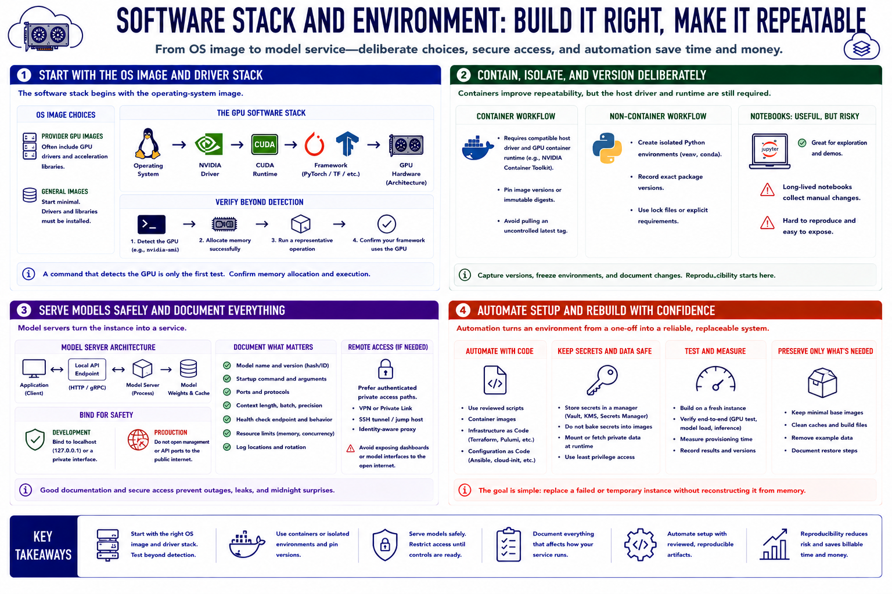

Software Stack
Connecting to LMS... Progress: in progress

Narration
The software stack begins with an operating-system image. Provider images may include GPU drivers and acceleration libraries, while general images require installation. Match the NVIDIA driver, CUDA runtime, framework, and GPU architecture deliberately. A command that detects the GPU is only the first test; confirm that the chosen framework can allocate memory and execute a representative operation.
Containers package applications and dependencies into repeatable units, but they still rely on a compatible host driver and GPU container runtime. Pin image versions or immutable digests instead of pulling an uncontrolled latest tag. For non-container workflows, create isolated Python environments and record package versions. Notebooks are useful for exploration, but a long-lived notebook with manual changes is difficult to reproduce and easy to expose accidentally.
Model servers turn the instance into a service, and local API endpoints let applications communicate with them. Bind development services to a private interface or loopback address until access controls are ready. Document model versions, startup arguments, ports, context settings, and health checks. If a web notebook or model interface must be reached remotely, prefer an authenticated private access path over opening a management port to the internet.
Automate setup with reviewed scripts, images, or infrastructure definitions. The goal is to replace a failed or temporary instance without reconstructing it from memory. Keep secrets and private data outside reusable images. Test the build on a fresh instance, measure provisioning time, and preserve only the components necessary for the workload. Reproducibility reduces both operational risk and the billable time spent repairing one-off environments.